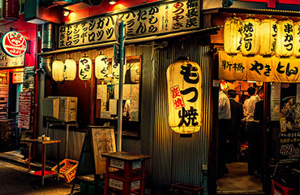

Takoyaki is the snack is shaped in a delicious ball made of wheat flour in a special takoyaki pan, designed to create the shape. It is usually filled with minced or diced octopus, tempura scraps, pickled ginger and green onion. The best place to try this delectable Japanese treat in Osaka would be whilst walking down Dōtonbori.
Okonomiyaki is the Japanese variation of a savory pancake, filled with cabbage and a topping of your choice. When broken down to okonomi (as you like it) and yaki (grilled), the word itself means grilled as you like it, so okonomiyaki is a very personal meal.
Kushikatsu, also known as kushiage, is a form of traditional Japanese street food made up of seasoned, skewered and grilled meat. Kushi refers to the skewers themselves while katsu refers to a deep fried cutlet of meat. Kushikatsu comes in all shapes and forms and can be made with chicken, pork, seafood and even seasonal vegetables.
You’ve all had an instant noodle experience before, but when in Japan, you have to try the real thing. One of the best places in Osaka to get yourself some warm, tasty ramen would be at Kinryu Ramen along Dōtonbori.
Sometimes it is difficlt to find the cafe eating breakfast early morning or taking a break during the shopping and sightseeing. If you want to have a coffee and sweats, there are many places to eat in Osaka.

An izakaya can be described as a Japanese version of a pub serving tapas-style food to accompany drinks. They are usually casual, noisy places where local people head for fun, food and a laugh. Introduction of izakayas in Osaka.